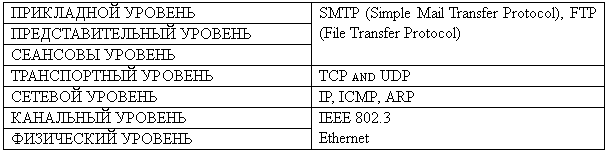

Функции уровей
Физический уровень
Физический уровень описывает физические свойства (например, электромеханические характеристики) среды и сигналов, переносящих информацию. Это физические характеристики кабелей и разъемов, уровни напряжений и электрического сопротивления и.т.д., в том числе, например, спецификация кабеля «неэкранированная витая пара» (unshielded twisted pair, UTP)
Канальный уровень
Канальный уровень обеспечивает перенос данных по физической среде. Он поделен на два подуровня: управления логическим каналом (logical link control, LLC) и управления доступом к среде (media access control, MAC). Такое деление позволяет одному уровню LLC использовать различные реализации уровня MAC. Уровень MAC работает с применяемым в Ethernet и Token-Ring физическими адресами, которые «вшиты» в сетевые адаптеры их производителями. Следует различать физические и логические (например, IP) адреса. С последним работает сетевой уровень.
Сетевой уровень
В отличии от канального уровня, имеющего дело с физическими адресами, сетевой уровень работает с логическими адресами. Он обеспечивает подключение и маршрутизацию между двумя узлами сети. Сетевой уровень предоставляет транспортному уровню услуги с установлением соединения (connection-oriented), например Х.25, или без установления такового (connectionless) например IP (internet protocol). Одна из основных функций сетевого уровня – маршрутизация.
К протоколам сетевого уровня относиться IP и ICMP (Internet Control Massage Protocol).
Транспортный уровень
Транспортный уровень предоставляет услуги, аналогично услугам сетевого уровня. Надежность гарантируют лишь некоторые (не все) реализации сетевых уровней, поэтому ее относят к числу функций, выполняемых транспортным уровнем. Транспортный уровень должен существовать хотя бы потому, что иногда все три нижних уровня (физический, канальный и сетевой) предоставляет оператор услуг связи. В этом случае, используя соответствующий протокол транспортного уровня, потребитель услуг может обеспечить требуемую надежность услуг. TCP (Transmission Control Protocol) – широко распространенный протокол транспортного уровня.
Сеансовый уровень
Сеансовый уровень обеспечивает установление и разрыв сеансов, и управление ими. Сеанс – это логическое соединение между двумя конечными пунктами. Наилучший пример этой модели – телефонный звонок. При наборе номера Вы устанавливаете логическое соединение, в результате на другом конце провода звонит телефон. Когда один из собеседников говорит «аллё», начинается передача данных. После того как один из абонентов вешает трубку, телефонная компания выполняет некоторые действия для разрыва соединения. Сеансовый уровень следит также за очередностью передачи данных. Эту функцию называют «управление диалогом» (dialog management). Вот примеры протоколов сеансового, представительного и прикладного уровней – SMTP (Simple Mail Transfer Protocol), FTP (File Transfer Protocol) и Telnet.
Представительный уровень
Представительный уровень позволяет двум стекам протоколов «договариваться» о синтаксисе (представлении) передаваемых друг другу данных. Поскольку гарантий одинакового представления информации нет, то этот уровень при необходимости переводит данные из одного вида в другой.
Прикладной уровень
Прикладной уровень – высший в модели ISO/ OSI. На этом уровне выполняться конкретные приложения, которые пользуются услугами представительного уровня (и косвенно – всех остальных). Это может быть обмен электронной почтой, пересылка файлов и любое другое сетевое приложение.

Для передачи данных по сети информация разбивается
На маленькие управляемые блоки, содержащие все необходимые сведения для их передачи. Эти блоки называются пакетами;
заголовок, включающий в себя информацию протоколов всех уровней; трейлер, содержащий информацию для обнаружения ошибок.